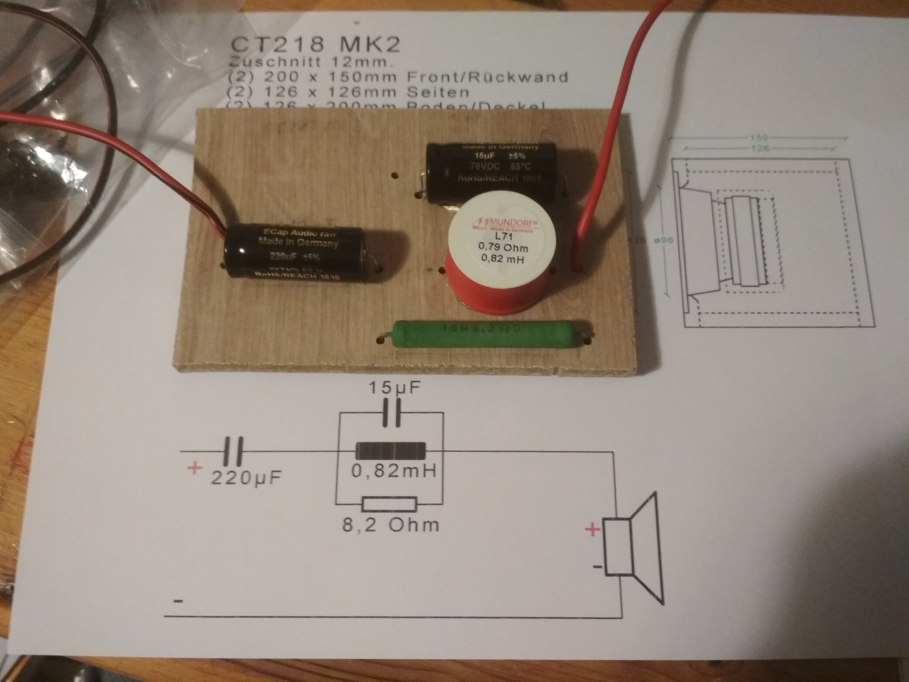
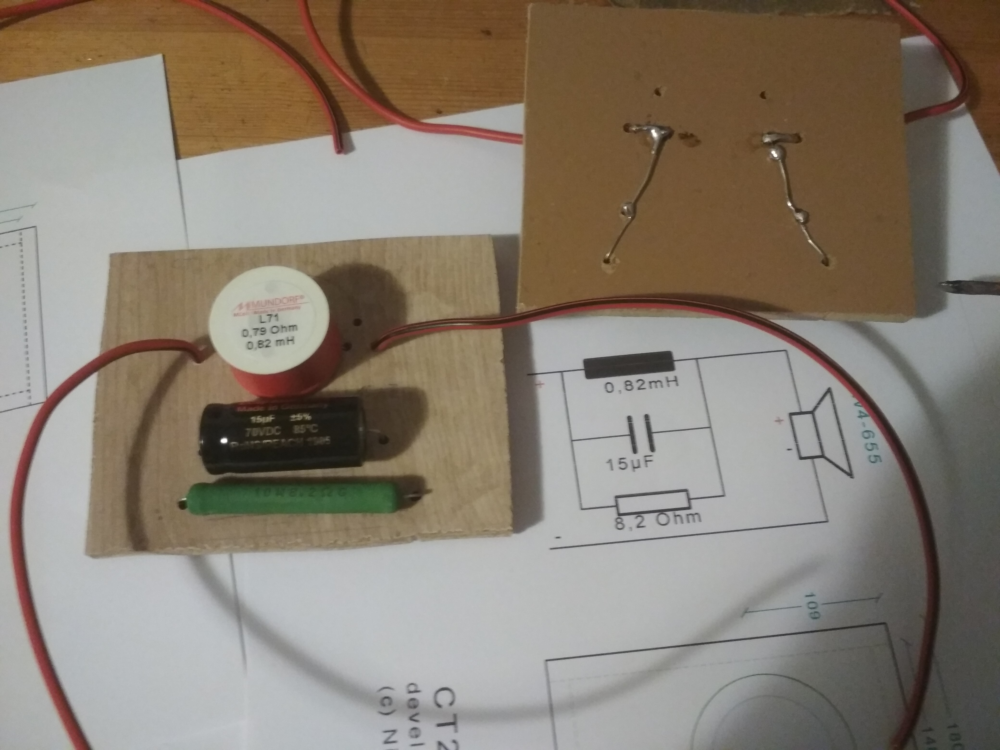
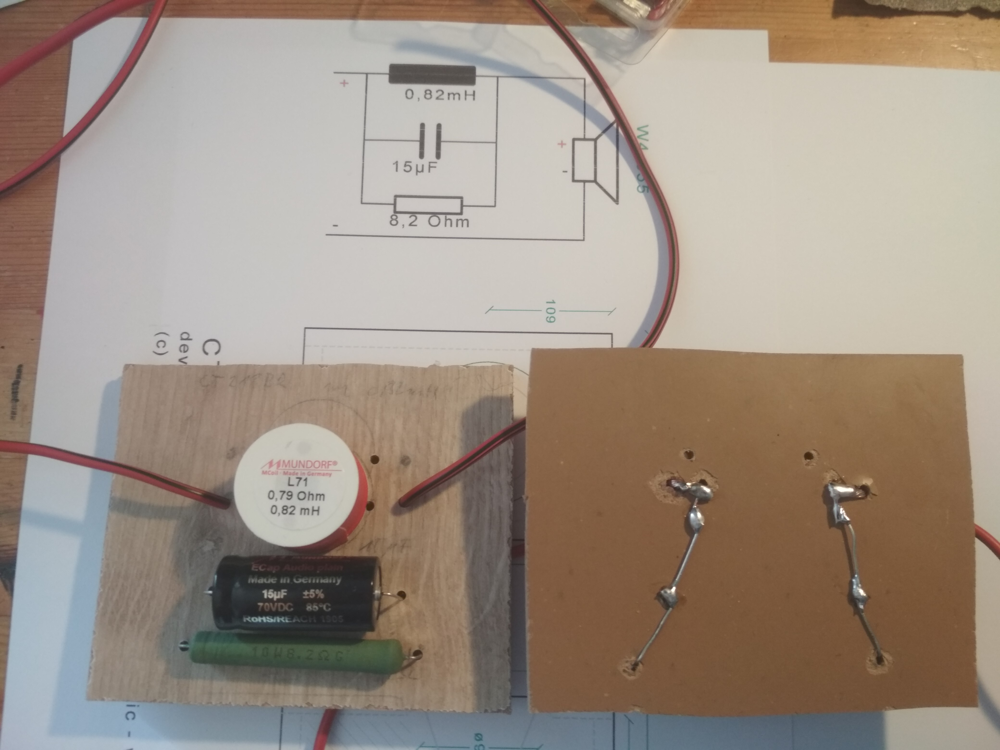
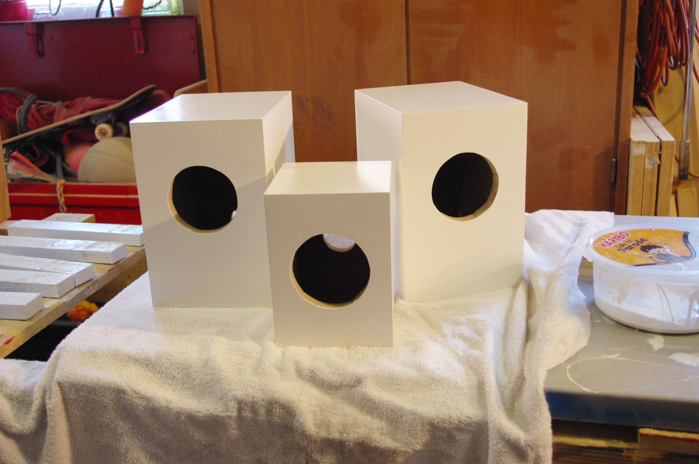
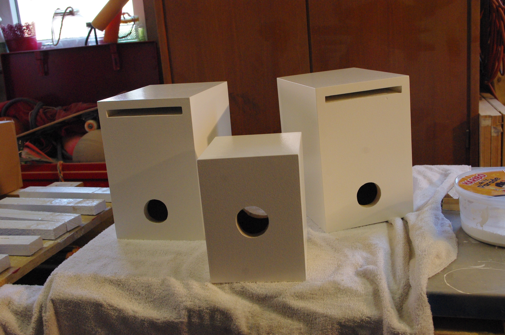

Lautsprecher
Kaum 3 Jahre nachdem ich den Subwoofer fertiggestellt habe, bin ich dazu gekommen die Rear-Speaker und den Centerlautsprecher für meine 5.1 Anlage zu bauen.
Für meine 10 Jahre alten Regalboxen habe ich damals als Hochtöner den Vifa XD 270F/4 verwendet (später auch als Peerless DX25TG59-04 vertrieben), sowie als Breitbandlautsprecher den Tangband W4-655SA.
Da es den W4-655SA als Lautsprecher nicht mehrgibt, konnte ich nur das Nachfolgemodell W4-655 verwenden.
Nach etwas einlesen und dem Suchen nach einer Alternative, habe ich bei Omnes Audio einige passende Modelle gefunden, die als gute Einstiegsmodelle und Ergänzung zu meinen alten Regalboxen geignet sind.
Für die Rear-Speaker habe ich den Bausatz CT 218 BR verwendet.
Als Center kommt der Bausatz CT 218 MK II zum Einsatz.
Bei den Regalboxen habe ich damals noch die glöteten Frequenzweichen geschenkt bekommen. Diese mal habe ich auch diese selber gelötet. Sicher geht es schöner, und vielleicht werden einige Löststellen mal Probleme machen, aber es sind die ersten selbst gemachten weichen. ;-)



 